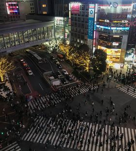
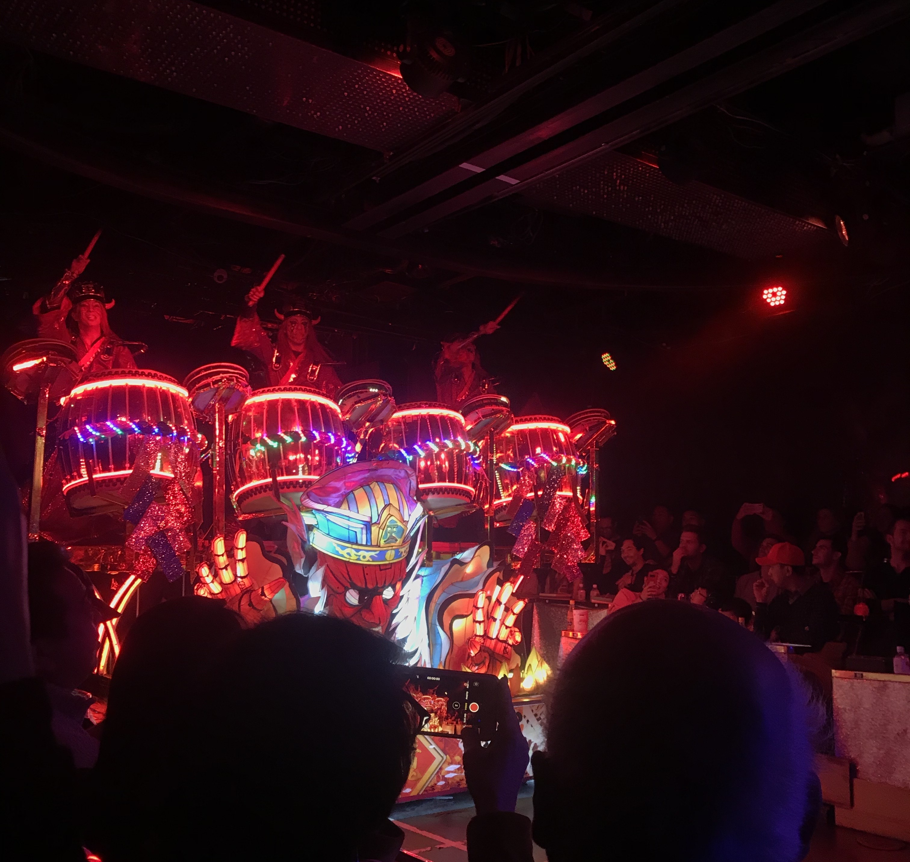
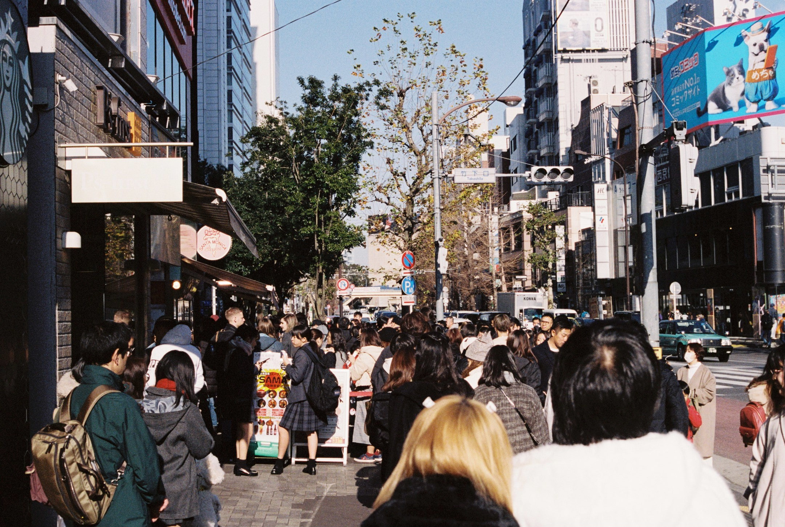
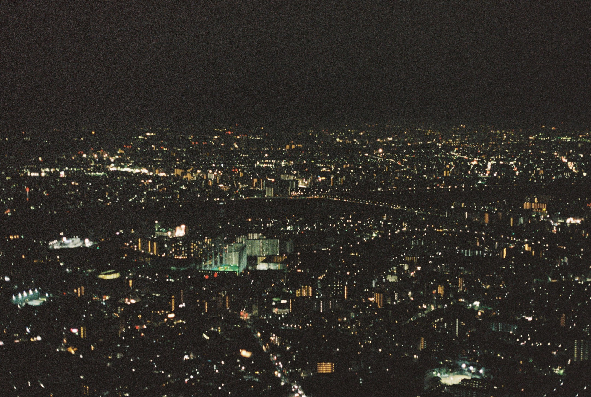
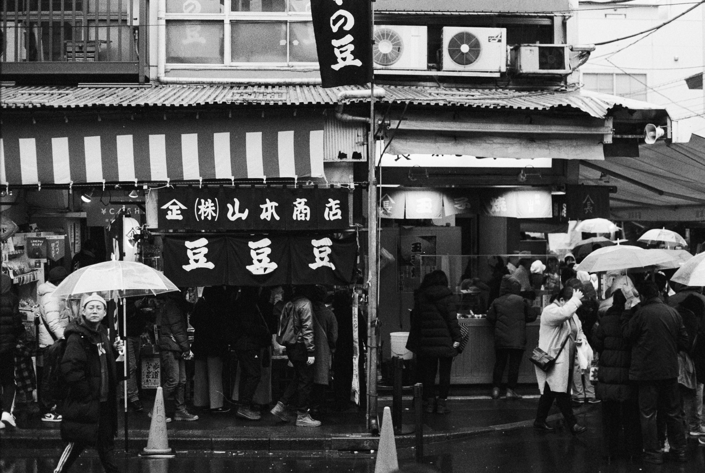
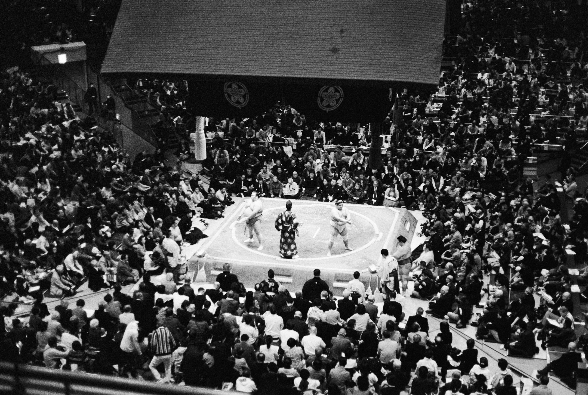

Tokyo

Tokyo is the capital city of Japan, it is a gigantic city that's combination of ultramodern buildings and traditional temples combines for a beautiful and unique landscape of neon-lit buildings, contemporary art, historical temples and much more. Tokyo has some of the best food you'll ever eat, with just about every ramen or sushi place providing a top quality meal that will satisfy a hungry tourist after a big day of exploring.
Robot Restaurant:
If you're looking for a unique experience this is the place for you, the robot restaurant is quintessential Japanese eccentricity. With a mixture of cabaret, live-action anime and lasers combing to create a memorable sensual overload.

Harajuku:
If you enjoy clothing and fashion, harajuku will deliver with a wide and seemingly endless variety of stores ranging from high fashion to rare vintage pieces providing for an great shopping experience that will leave you feeling guilty for not getting more due to the enormous amount of great clothing.

SkyTree:
The sky tree is best view of the city that you'll be able to find, boasting a whopping full height of 634 metres the sky tree is the tallest tower in the world and the second tallest structure. The view from the top is something to behold and provides for a great photo opportunity and a cheap and efficient activity. Pictured below is an image of the view from the top.

Tsujiki Fish Market:
Tsujiki fish markets is one of the best places to experience fresh seafood within Tokyo, majority of the best restaurants around Tokyo source their fresh fish from here. It is home to a huge variety of foods many of wish you have probably never seen before, let alone tasted. It is also home to the oldest still trading sushi restaurant wish is a must for any sushi lover.

Sumo Wrestling:
The Ryogoku Kokugikan sumo arena is a beautiful stadium and is home to the highest level sumo wrestlers in Japan, the fights are a must see and when the title card fights occur and the stadium is packed makes for an great atmosphere. To maximise your experience it is important to get up extra early to line up for tickets here, as sumo wrestling is such a popular sport in Japan tickets are in high demand with majority being sold months in advance. The only same day tickets available are the ones you must line up for, the importance of getting up early for them can not be stressed enough as some people line up overnight for them.
